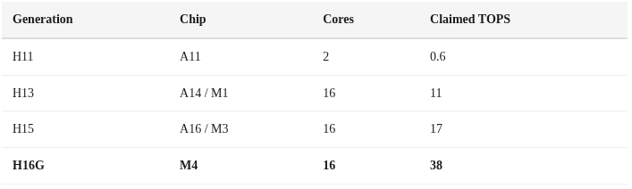
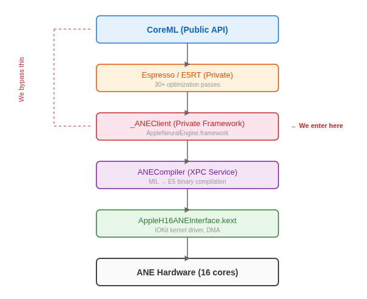
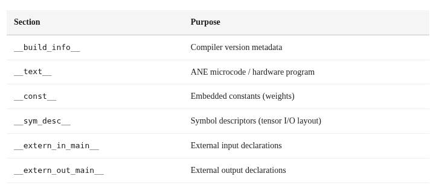
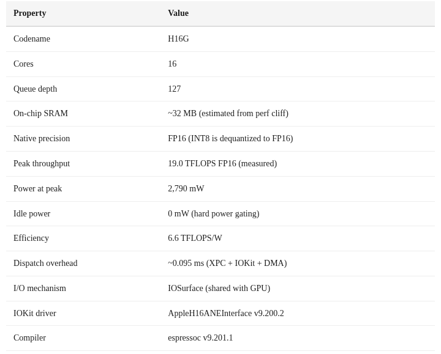
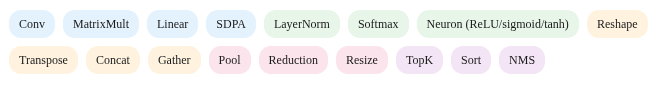

Reverse Engineering
How we bypassed CoreML and talked directly to the hardware
Originally published on Substack. Mirrored here with the subscription widgets removed; text and figures unchanged.
A note on “we”:
Throughout this series, “we” refers to maderix (human) and Claude Opus 4.6 (by Anthropic) working as a pair. The reverse engineering, benchmarking, and training code were developed collaboratively — human intuition driving the exploration, AI reasoning through the data and writing the analysis. We think this kind of human–AI collaboration is a new and natural way to do systems research: one partner as the architect with intuition, the other as the engineer writing the code and crafting experiments .
This whole thing started with a simple question: can you train a model on Apple’s Neural Engine?
Apple doesn’t want you to know the answer. They don’t publish the ANE’s ISA. They don’t document its internal architecture. They don’t even give you a way to program it directly — everything goes through CoreML, which adds layers of abstraction, optimization passes, and overhead that make it nearly impossible to understand what the hardware is actually doing.
So we reverse-engineered it.
Over several days, we mapped the entire software stack from CoreML down to the IOKit kernel driver, discovered how to compile and execute programs on the ANE without CoreML, cracked the binary format, measured the true peak performance (spoiler: Apple’s “38 TOPS” number is misleading), and ultimately got a neural network training on a chip designed exclusively for inference.
This is Part 1 of a three-part series. Here we cover the reverse engineering — how we peeled back the layers to understand what the M4 Neural Engine actually is and how to talk to it directly.
What is the Neural Engine?
The ANE is not a GPU. It’s not a CPU. It’s a graph execution engine — a fixed-function accelerator that takes a compiled neural network graph and executes the entire thing as one atomic operation. You don’t issue individual multiply-accumulate instructions. You submit a compiled program describing an entire computation graph, and the hardware executes it end-to-end.
Apple introduced the Neural Engine in the A11 (2017) as a 2-core design. Each generation has scaled it up:

The M4’s ANE (codename H16G) is what we’re working with. 16 cores, a queue depth of 127 evaluation requests, independent DVFS (dynamic voltage/frequency scaling), and hard power gating that drops it to exactly 0 milliwatts when idle.
Prior Art
We weren’t the first to poke at ANE internals.
hollance/neural-engine — Matthijs Hollemans’ comprehensive community documentation of ANE behavior, performance characteristics, and supported operations. The single best existing resource on ANE.
mdaiter/ane — Early reverse engineering with working Python and Objective-C samples, documenting the ANECompiler framework and IOKit dispatch.
eiln/ane — A reverse-engineered Linux driver for ANE (Asahi Linux project), providing insight into the kernel-level interface.
apple/ml-ane-transformers — Apple’s own reference implementation of transformers optimized for ANE, confirming design patterns like channel-first layout and 1×1 conv preference.
But to our knowledge, nobody had previously: (a) achieved direct _ANEClient API access without CoreML on M4, (b) cracked the in-memory MIL compilation path, (c) measured true peak throughput bypassing CoreML overhead, or (d) trained a model on ANE.
Methodology
Our approach combined several techniques:
Class discovery via
dyld_info -objconAppleNeuralEngine.framework— this dumps every Objective-C class and methodMethod swizzling to intercept CoreML’s calls to the private ANE frameworks
Binary analysis of compiled E5 bundles to understand the neural program format
Scaling analysis — varying matrix sizes, graph depths, and channel counts to infer hardware topology
We discovered 40+ private classes in AppleNeuralEngine.framework, including _ANEClient, _ANEModel, _ANERequest, _ANEIOSurfaceObject, _ANEInMemoryModel, and many more.
The Software Stack
Here’s what the full ANE software stack looks like, from the public CoreML API down to hardware:

The key insight: CoreML is not the only way in. The _ANEClient class in AppleNeuralEngine.framework provides direct access to the compile → load → evaluate pipeline. CoreML is just a convenience layer on top.
_ANEClient: Direct Access to the Neural Engine
Here’s the complete sequence to compile and run a program on ANE without CoreML:
// 1. Get shared client connection
id client = [_ANEClient sharedConnection];
// 2. Create model reference
id model = [_ANEModel modelAtURL:compiledURL key:@"mykey"];
// 3. Compile (MIL text → E5 binary, result is cached)
[client compileModel:model options:@{
@"kANEFModelType": @"kANEFModelMIL",
@"kANEFNetPlistFilenameKey": @"model.mil"
} qos:21 error:&err];
// 4. Load program onto ANE hardware
[client loadModel:model options:@{} qos:21 error:&err];
// → programHandle assigned, queueDepth = 127
// 5. Create IOSurface I/O buffers
IOSurfaceRef surface = IOSurfaceCreate(props);
id wrapped = [_ANEIOSurfaceObject objectWithIOSurface:surface];
// 6. Build evaluation request
id req = [_ANERequest requestWithInputs:@[wA, wB]
inputIndices:@[@0, @1]
outputs:@[wOut]
outputIndices:@[@0]
weightsBuffer:nil
perfStats:nil
procedureIndex:@0];
// 7. Execute on ANE
[client evaluateWithModel:model options:@{}
request:req qos:21 error:&err];
// 8. Read results from output IOSurface
IOSurfaceLock(outSurface, kIOSurfaceLockReadOnly, NULL);
float *data = IOSurfaceGetBaseAddress(outSurface);
// ... read results ...
IOSurfaceUnlock(outSurface, kIOSurfaceLockReadOnly, NULL);The I/O uses IOSurfaces — the same shared memory mechanism used for GPU textures. This means zero-copy transfers between GPU and ANE are theoretically possible if you share the same IOSurfaceRef.
Key finding: The ANE supports a queue depth of 127 — you can have up to 127 evaluation requests in-flight simultaneously. This is far deeper than most accelerator queues and suggests the hardware is designed for high-throughput streaming inference.
MIL: The Input Language
CoreML doesn’t send neural networks to ANE in ONNX or protobuf format. It uses MIL — Machine Learning Intermediate Language — a typed SSA (Static Single Assignment) representation that looks like this:
program(1.3)
[buildInfo = dict<string, string>({
{"coremltools-version", "9.0"}
})]
{
func main<ios18>(
tensor<fp16, [1, 1024, 1, 1024]> x,
tensor<fp16, [1, 1024, 1, 1024]> w
) {
bool tx = const()[val = bool(false)];
bool ty = const()[val = bool(false)];
tensor<fp16, [1, 1024, 1, 1024]> out =
matmul(transpose_x = tx, transpose_y = ty,
x = x, y = w);
} -> (out);
}MIL is surprisingly readable. Every value is typed with both precision and shape. Operations are named and take keyword arguments. The function signature declares input tensors with explicit dimensions.
The tensor layout follows ANE’s native NCDHW + Interleave format: [Batch, Channels, Depth, Height, Width]. For a 1024×1024 matrix, this becomes [1, 1024, 1, 1024] in 4D.
E5 Binary: The Compiled Format
When ANECompiler processes a MIL program, it produces an E5 binary — a FlatBuffer-structured file with these sections:

Here’s the fascinating part: a 1024×1024 matmul compiles to 2,688 bytes. A 128×128 matmul compiles to 2,680 bytes. Nearly identical. The E5 binary isn’t encoding the matrix multiplication algorithm — it’s encoding a parameterized program whose behavior is controlled by tensor descriptors at runtime. The “microcode” is more like a configuration than traditional machine code.
Implication: The ANE hardware likely has a small set of fixed compute primitives (convolution, matrix multiply, elementwise) that are parameterized by tensor shape descriptors. The E5 binary describes which primitives to chain and how to connect them, not the compute itself.
The In-Memory Path: The Holy Grail
The file-based compilation path works but has a problem: it requires writing MIL text to disk, creating a directory structure, and pointing the compiler at it. For training — where we need to recompile with updated weights every few steps — this filesystem round-trip is unacceptable.
We discovered _ANEInMemoryModelDescriptor, which accepts MIL text directly in memory:
id desc = [_ANEInMemoryModelDescriptor
modelWithMILText:milData // NSData*, not NSString*!
weights:weightDict // NSDictionary*, not NSData*!
optionsPlist:nil];
id model = [_ANEInMemoryModel
inMemoryModelWithDescriptor:desc];
[model compileWithQoS:21 options:@{} error:&err];
[model loadWithQoS:21 options:@{} error:&err];
[model evaluateWithQoS:21 options:@{}
request:req error:&err];Getting this to work required solving three gotchas that cost us days of debugging:
NSData, not NSString: The
milTextparameter wants anNSData*containing UTF-8 bytes, not anNSString*. Passing a string fails silently.NSDictionary, not NSData: The
weightsparameter is a dictionary mapping weight names to NSData blobs, not a single data buffer.Temp directory workaround: Even the “in-memory” path internally writes to a temp directory. If you don’t have write access to the default location, compilation fails with an opaque error. We had to ensure a writable temp path was available.
And one delightful discovery: Apple’s internal code references a Desctiptor (sic) in one of the class names. Even Apple engineers make typos in private APIs. :)
Hardware Profile: What We Know
Through IOKit probing, scaling analysis, and power measurement, we’ve built this profile of the M4 ANE:

DVFS Channels
IOKit’s IOReportLegend reveals the ANE has its own independent power management with adaptive clocking, dithering, and multiple hardware/software triggers:
ANE_ADCLK_TRIG — adaptive clock trigger
ANE_ADHWTRG — hardware adaptive trigger
ANE_ADSWTRG — software adaptive trigger
ANE_DITHR_TRIG — dithering trigger
ANE_PPT_TRIG — power/performance tuning
ANE_PPT_SWTRG — software PPT trigger
ANE_PPT_HWTRG — hardware PPT trigger
ANE_EXT_TRIG0-3 — external triggersThis level of DVFS sophistication suggests the ANE can independently scale its frequency and voltage based on workload characteristics, separate from the CPU and GPU power domains.
Supported Operations
From ANECompiler.framework exports, the ANE natively supports:

Notably, Conv appears to be the ANE’s primary compute primitive. As we’ll show in Part 2, expressing matmul as 1×1 convolution unlocks significantly higher throughput.
The IOSurface Protocol
All data transfer to and from the ANE uses IOSurfaces. The protocol is straightforward:
// Create an IOSurface for a 1024x1024 float tensor
NSDictionary *props = @{
@"IOSurfaceWidth": @(1024),
@"IOSurfaceHeight": @(1024),
@"IOSurfaceBytesPerElement": @(4), // float32
@"IOSurfaceBytesPerRow": @(4096), // 1024 * 4
@"IOSurfaceAllocSize": @(4194304),
@"IOSurfacePixelFormat": @(0)
};
IOSurfaceRef surface = IOSurfaceCreate(props);
// Write data
IOSurfaceLock(surface, 0, NULL);
float *ptr = IOSurfaceGetBaseAddress(surface);
memcpy(ptr, data, 4194304);
IOSurfaceUnlock(surface, 0, NULL);
// Wrap for ANE
id wrapped = [_ANEIOSurfaceObject objectWithIOSurface:surface];Since IOSurfaces are the same mechanism used for GPU texture sharing, this opens up the possibility of zero-copy GPU↔ANE pipelines where both accelerators operate on the same memory.
Compilation Cache
The ANE compiler caches E5 binaries on disk to avoid recompilation:
~/Library/Caches/<app>/com.apple.e5rt.e5bundlecache/<build>/<hash>/
<hash>.bundle/
└── H16G.bundle/ ← H16G = M4 ANE target
├── H16G.e5 ← FlatBuffer binary (2-3 KB)
└── main/
└── main_ane/
└── model.anehashFirst compile takes ~20-40ms. Cache hits are effectively free. This matters for inference (compile once, run forever) but creates challenges for training, where weights change every step.
Unexplored Territory
Several discovered classes remain unexplored and hint at capabilities we haven’t tested:
_ANEChainingRequest— may enable chaining multiple compiled models in a single dispatch_ANESharedEvents/_ANESharedSignalEvent/_ANESharedWaitEvent— Metal-style fence/signal primitives for GPU↔ANE synchronization_ANEPerformanceStats— possibly hardware performance counters_ANEVirtualClient— virtualized ANE access, potentially for multi-process sharing
And some things we genuinely don’t know:
The exact ANE core microarchitecture and ISA
How cores are assigned to operations within a graph
The ANE clock frequency (DVFS makes this dynamic)
Whether hardware perf counters are accessible
The exact SRAM topology (banked? unified? per-core?)
What’s Next
Now that we have direct access to the ANE, we can actually measure what it can do. In Part 2, we’ll benchmark everything: matmul scaling, the SRAM performance cliff, why convolution is 3× faster than matmul, why Apple’s “38 TOPS” claim is misleading, and how bypassing CoreML gives you 2-4× more throughput.
In Part 3, we’ll do the thing Apple says you can’t: train a neural network on the Neural Engine.
All code is available at github.com/maderix/ANE in the
ane/directory. Tested on M4 Mac Mini, macOS 15.x.